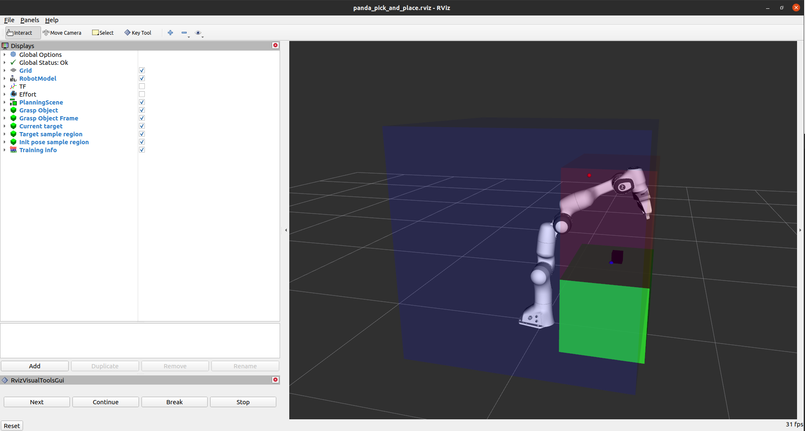

ros_gazebo_gym.task_envs.panda.panda_pick_and_place
An ROS Panda pick and place gymnasium environment.
This environment is an extension of the PandaReachEnv task environment,
sharing most features such as the action spaces. Notable distinctions are detailed below.
- Observation space:
The observation space was extended with the 11 observations:
Object x position.
Object y position.
Object z position.
x distance between object and end-effector.
y distance between object and end-effector.
z distance between object and end-effector.
Object yaw rotation.
Object pitch rotation.
Object roll rotation.
Object translational velocity.
Object rotational velocity.
- Goal:
In this environment the agent has to learn to lift a block up to reach the desired goal position. It was based on the FetchPickAndPlace-v2 gymnasium environment.
Configuration
The configuration files for this environment are found in the panda task environment config folder.
Module Contents
Classes
Classed used to create a Panda pick and place environment. |
Attributes
- ros_gazebo_gym.task_envs.panda.panda_pick_and_place.MOVEIT_ADD_BOX_TOPIC = 'panda_moveit_planner_server/planning_scene/add_box'[source]
- ros_gazebo_gym.task_envs.panda.panda_pick_and_place.CONFIG_FILE_PATH = 'config/panda_pick_and_place.yaml'[source]
- class ros_gazebo_gym.task_envs.panda.panda_pick_and_place.PandaPickAndPlaceEnv(config_path=CONFIG_FILE_PATH, gazebo_world_launch_file='start_pick_and_place_world.launch', *args, **kwargs)[source]
Bases:
ros_gazebo_gym.task_envs.panda.panda_reach.PandaReachEnv,gymnasium.utils.EzPickleClassed used to create a Panda pick and place environment.
- object_marker_class
The RViz marker class used for displaying the object. Can be overwritten by child environments to change the visualization of the object.
- Type:
visualization_msgs.msg.Marker
Initializes a Panda pick and place task environment.
- Parameters:
config_path (str, optional) – Path where the environment configuration value are found. The path is resolved relative to the
panda_reachclass file.gazebo_world_launch_file (str, optional) – Name of the launch file that loads the gazebo world. Currently only the launch files inside the panda_gazebo package are supported. Defaults to
start_pick_and_place_world.launch.*args – Arguments passed to the
PandaReachEnvsuper class.**kwargs – Keyword arguments that are passed to the
PandaReachEnvsuper class.